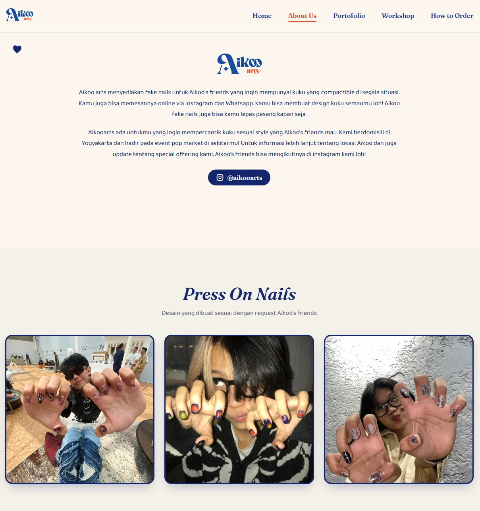
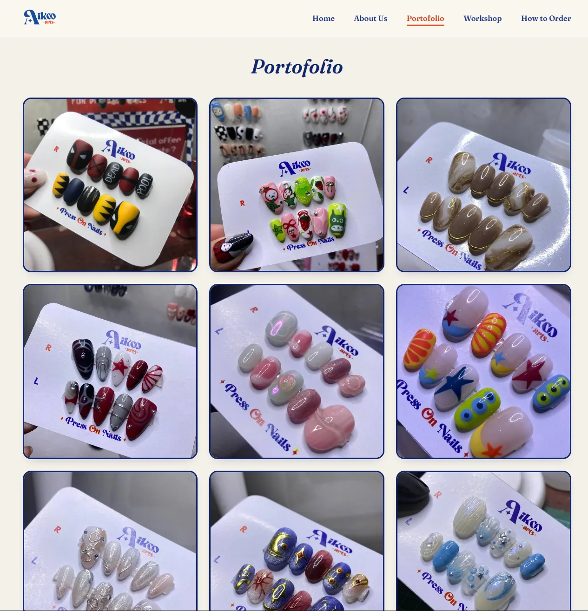
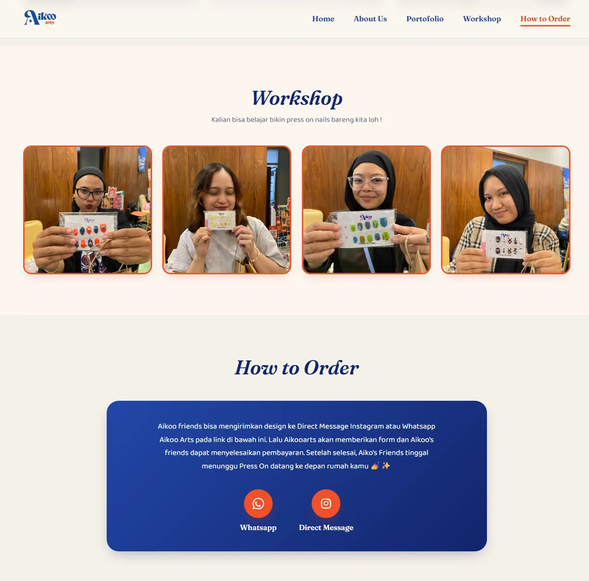

Website company profile untuk brand custom nail art
Situs company profile untuk Aikoo Arts, bisnis custom press-on nail art di Yogyakarta — menampilkan portofolio karya, workshop, dan alur order yang langsung mengarahkan calon pembeli ke WhatsApp/Instagram.
- Peran
- Full-stack — desain UI, layout, animasi, deployment
- Jenis
- Website company profile
- Status
- Live — aikooarts.vercel.app
- Kode
- Repositori privat — showcase publik ada di sini
Masalah
Aikoo Arts sebelumnya hanya berjualan lewat Instagram — portofolio karya tersebar di feed dan story yang sulit ditelusuri, dan calon pembeli tidak punya satu tempat untuk melihat semua karya sekaligus sebelum memutuskan order. Tiga kebutuhan utamanya:
- Portofolio harus mudah dijelajahi. Puluhan hasil karya perlu ditampilkan rapi dalam satu galeri, bukan di-scroll satu-satu lewat feed Instagram.
- Alur order harus singkat. Dari lihat portofolio sampai chat untuk order idealnya cuma beberapa klik, langsung ke WhatsApp atau DM Instagram.
- Kesan brand harus terasa dari desainnya sendiri. Aikoo Arts punya identitas visual yang playful (maskot, warna cerah, font pixel) — situsnya harus mencerminkan itu, bukan template generik.
Pendekatan
Situs dibangun sebagai satu halaman statis (HTML/CSS/JS polos, tanpa
framework atau build step) supaya ringan dan gampang di-deploy sebagai
static site di Vercel. Galeri portofolio, workshop, dan foto "by request"
di-generate dari array nama file di main.js, bukan ditulis
manual satu-satu di HTML — menambah satu foto baru cukup menambah satu
baris di array, tidak perlu menyentuh markup.
Untuk kesan interaktif tanpa library animasi, dipakai
IntersectionObserver untuk efek scroll-reveal dan highlight
nav aktif — lebih murah dibanding listener scroll manual
yang butuh throttling. Ditambah sentuhan kecil berbasis posisi mouse
(parallax pada elemen dekorasi hero, glow yang mengikuti kursor) untuk
memperkuat kesan playful brand-nya.
Palet warna dan tipografi (font display Fraunces, font pixel Silkscreen, font body Baloo 2) sengaja disesuaikan dengan identitas visual Aikoo Arts sendiri — berbeda total dari gaya gelap/teknis yang saya pakai di portofolio dan project lain, karena desain di sini harus mengikuti brand klien, bukan selera saya.
Fitur
Galeri data-driven
Portofolio, workshop, dan foto by-request di-render dari array nama file, bukan HTML statis per foto.
Scroll reveal & active nav
Elemen muncul halus saat di-scroll, dan menu nav ikut ter-highlight sesuai section yang sedang dilihat — keduanya pakai IntersectionObserver.
Hero parallax & cursor glow
Elemen dekorasi hero bergerak halus mengikuti posisi mouse, plus glow lembut yang mengikuti kursor di desktop.
Alur order langsung ke WhatsApp/IG
Tombol order dan kontak langsung membuka WhatsApp atau DM Instagram, tanpa form perantara.
Navigasi mobile
Menu hamburger untuk layar kecil, otomatis tertutup setelah satu link nav diklik.
Desain sesuai brand
Warna, font, dan maskot ilustrasi disesuaikan dengan identitas visual Aikoo Arts yang playful.
Tampilan




Teknologi
Tidak ada framework atau build step sama sekali — situsnya cuma
index.html, css/style.css, dan
js/main.js. Untuk company profile sekelas ini, kompleksitas
tambahan dari framework tidak sepadan dengan manfaatnya, dan deploy ke
Vercel sebagai static site jadi jauh lebih sederhana.
Beberapa keputusan teknis
portfolioNumbers, tidak perlu menulis ulang HTML kartu foto.
const portfolioNumbers = [1, 2, 6, 7, 8, 9, 10, 11, 12, 13, 14, 15]; const portfolioPhotos = portfolioNumbers.map(n => `media/optimized/porto/porto${n}.jpg`); portfolioGrid.innerHTML = portfolioPhotos.map((src, i) => ` <div class="porto-card reveal"> <div class="porto-thumb"><img src="${src}" alt="Portofolio Aikoo Arts ${i + 1}" loading="lazy"></div> </div>`).join('');
scroll event.
const io = new IntersectionObserver((entries) => { entries.forEach(entry => { if (entry.isIntersecting) { entry.target.classList.add('in-view'); io.unobserve(entry.target); // cukup sekali, lalu berhenti diamati } }); }, { threshold: 0.15 }); revealEls.forEach(el => io.observe(el));
hover: hover, supaya tidak ada listener mousemove yang
tidak berguna (dan memboroskan baterai) di HP.
if (cursorGlow && window.matchMedia('(hover: hover) and (pointer: fine)').matches) { window.addEventListener('mousemove', (e) => { cursorGlow.style.opacity = '1'; cursorGlow.style.transform = `translate(${e.clientX}px, ${e.clientY}px) translate(-50%, -50%)`; }); }
Yang saya pelajari
Project ini melatih hal yang tidak muncul di project internal (warehouse, arcade): mendesain untuk identitas visual orang lain, bukan preferensi sendiri. Warna oranye-biru cerah, font pixel, dan maskot lucu bukan gaya yang biasa saya pakai, tapi harus konsisten di setiap section supaya terasa seperti satu brand yang utuh.
Pelajaran teknisnya: untuk situs se-sederhana company profile, tidak
semua hal butuh framework. Vanilla JS dengan
IntersectionObserver sudah cukup untuk interaksi yang terasa
halus, dan static hosting di Vercel jauh lebih murah dan sederhana
dibanding menyiapkan backend yang sebenarnya tidak dibutuhkan.
Catatan soal akses kode. Repositori produksi bersifat privat karena milik klien, tapi seluruh kode di sini bersih dari data sensitif, jadi tersedia versi showcase publik yang identik dengan situs live.